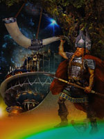

Хеймдалль або Хеймдалр, в скандинавської міфології син Одіна і дев'яти матерів, страж богів, що мешкає біля краю світу. Його обов'язком була охорона райдужного моста Біврест, що з'єднував Асгард з Мідгард (небо із землею), від велетнів-Йотун.
Спочатку він, можливо, був всюдисущим богом неба, чув, як росте трава і овеча шерсть, і бачив за сотню миль. Хеймдалль - власник золотого рога ґ'ялларгорн, звук якого буде почутий у всіх куточках світу. Звук його роги сповістить про початок Рагнарека, під час якого Хеймдалль повинен загинути в поєдинку з Локі.
За деякими тлумаченнями, Хеймдалль, мабуть, пов'язаний зі світовим древом Іггдрасіл' і його місце розташовувалося на верхівці ясена, вище найвищої веселки. Він міг приймати вигляд Рига, смертного первопредка трьох соціальних груп - знаті, вільних селян і рабів. Під ім'ям Рига бог по черзі відвідав три будинки в Мідгард, і народжені від нього гожі діти ставали конунгами, здоровані - селянами, а виродки - рабами.